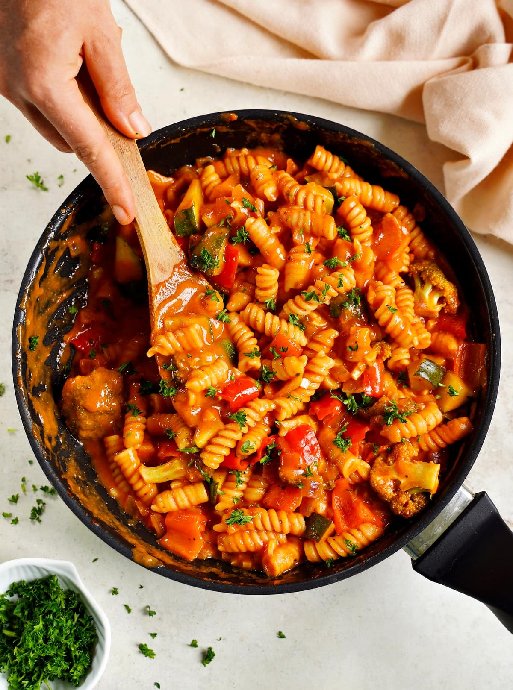

Keith Pasta

Description
This is the pasta Keith makes at home in under 20 minutes
A one pot pasta his wife taught him how to make.
Ingredients
- Any type of pasta
- Spaghetti sauce
- Olive oil
- Salt
- Ground turkey (or any type of meat)
- Half an onion
- One bellpepper
- Any other veggies you like!
Steps
- Place some olive oil in a pan
- Insert meat and cook, season as desired
- Chop up all veggies then put them in the pan
- Cook meat and veggies until meat is fully cooked and veggies start to get soft
- Pour pasta sauce into the pan
- Add pasta
- Add water proportional to the amount of pasta
- Shake some salt and a little bit more olive oil on the water
- Turn the heat up to almost max, then stir well until pasta is soft
- Turn the heat down to a simmer, then let it sit until wifey get home
- Reheat when she gets home
- Add cheese or whatever else you want. We like red pepper flakes.
- Enjoy the meal